Drawing
In this section we're going to draw things in the room, both text and images. This is done using a Draw event:
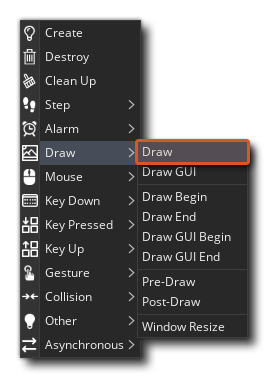
change image to Draw
Before going any further, you might want to make a new project from the Start Page, and add (or create) a few sprites as well as an object or two, as we'll be giving you some code that you can test using these. Even a white square will work for now as the sprite for our object!
Now, as mentioned in the section on Objects And Instances, if you don't add a Draw Event to the object, then GameMaker will default draw, meaning that if the object has a sprite assigned to it this sprite will be drawn, complete with any transforms that have been added.
What do we mean by transforms? Well, each object has a number of built-in variable that will control how an instance of the object draws its sprite when default drawing, and you can change these variables as the game runs to change the way the sprite is drawn.
You can find a list of all the built-in variables that can be used for transforming instance sprites here. GML Visual users have some dedicated actions that affect these variables, which you can find here, and you can also use the actual variables themselves along with the Get Instance Variable, Set Instance Variable and Assign Variable actions.
Let's look at some examples:
Changing Alpha (Transparency)
The alpha value is what controls the transparency of what's being drawn, and in GameMaker, you can use the image_alpha built-in variable to change how transparent the assigned sprite is. To see how this works, open (or create) an object, assign it a sprite, and then give the object a Create Event. In the Create Event, simply add the following GML Visual or GML Code:
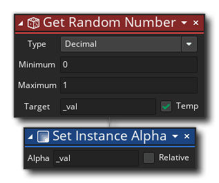
var _val = random(1);
image_alpha = _val;
Image alpha is calculated as a value from 0 to 1, where 0 is fully transparent and 1 is fully opaque (by default it's set to 1). So in this example, all we're doing is setting the image alpha to a random decimal value from 0 to 1. Place a few instances of this object in a room, and then click the Play button  at the top of the IDE.
at the top of the IDE.
You should see that each instance of the object draws its sprite with a different transparency:
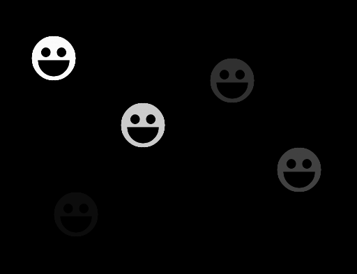
Changing Colour Blend (Tinting)
When your object is default drawing a sprite, this sprite is actually being drawn blended (or tinted) with a colour, and this colour value is stored in the image_blend built-in variable. By default this colour is white, which essentially means that no colour will be added to the sprite when it is shown on the screen. However, you can use other colours to achieve special effects, for example, use red to show the instance has received some damage.
In this example, we're going to blend different colours with the sprite while a key is pressed and held down, and so you'll need to open (or create) an object, assign it a sprite, and then give the object a Key Down <Space> Event.
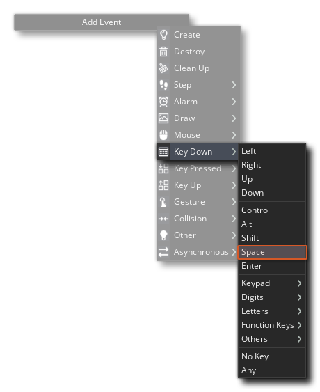
In this Key Down Event, add the following GML Visual or GML Code:
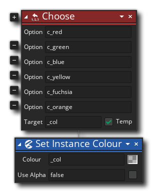
var _col = choose(c_red, c_green, c_blue, c_yellow, c_fuchsia, c_orange);
image_blend = _col;
Place a few instances of this object in a room, and then click the Play button at the top of the IDE, and test holding down and releasing the Space key. You should see that each instance will change its colour rapidly while the key is held down, and stop changing when it is released:
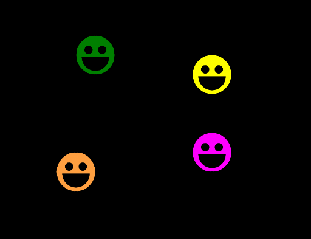
Changing Scale
Another pair of the properties that we can change for our sprite is the scale value, permitting us to draw it bigger or smaller whenever we want. Scale is calculated independently along the X and Y axis by two seperate variables, the image_xscale variable and the image_yscale variable. By default these are set to 1, and they act like multipliers, so a value of 0.5 would be half scale and a value of 2 would be double the scale.
Changing the assigned sprite scale using these variables will also change the size of the collision mask (bounding box) to match, which means that the collision detection area for the sprite will also scale. To avoid this, create your own variables for the X and Y scale, and use them in the Draw event to draw your sprite manually with draw_sprite_ext.
In this example, we're going to use some simple maths to make an instance scale the sprite up and down in a loop. To start with, open (or create) an object, assign it a sprite, and then give the object a Create Event. In this event add the following:
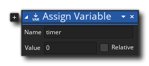
timer = 0;
Now add a Step Event to the object with this:
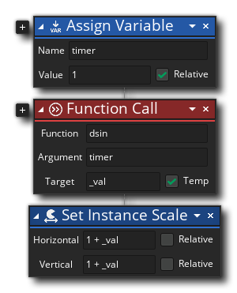
timer = timer + 1;
var _val = dsin(timer);
image_xscale = 1 + _val;
image_yscale = 1 + _val;
Here we're using the maths function dsin() to generate a value between -1 and 1 using the timer variable, and then applying that to the scale variables (1 + _val). After placing some instances into a room and pressing the Play button , you should see how the instances scale up and down from a scale of 0 (1 - 1) to a scale of 2 (1 + 1) and then back again.
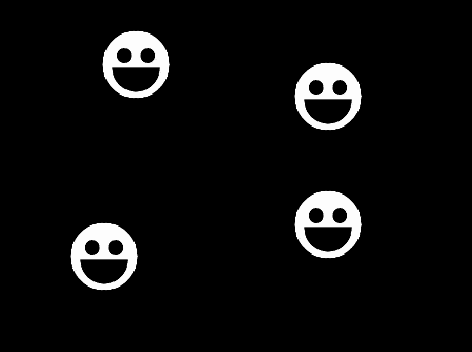
One last thing... change the "image_yscale" assignment (or "Vertical" field in GML Visual) to "1 - _val" (change + to -) and see what happens!
The above examples illustrate just some of the many ways that you can manipulate the object sprite when GameMaker is default drawing, but what about if you want to draw more than one thing for an object? In those cases you need to use the Draw Event to explicitly tell GameMaker what to draw, which is what we'll do in the following examples.
Drawing Two (Or More) Sprites Together
For this example, you'll need two sprites and one object. Call the sprites "spr_One" and "spr_Two", and then set the "spr_One" origin to the center and for "spr_Two" set its origin to the middle-left:
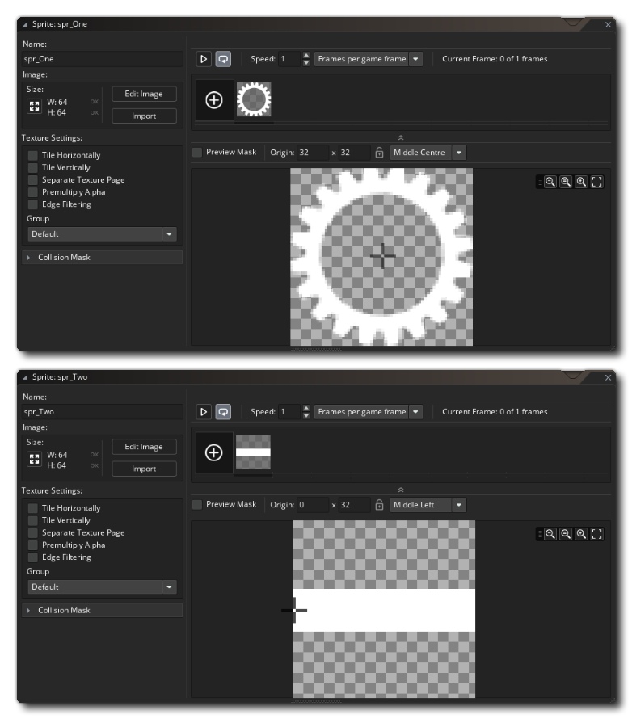
Assign the first sprite ("
spr_One" with the center origin) to the object you have created and then add a
Create Event. In the Create Event add the following GML Visual or GML:
draw_angle = 0;
We are going to use this custom variable to rotate "spr_Two" over time, and draw it overlayed on the sprite assigned to the object (" spr_One").
To do this we need to add a Draw Event to the object. By doing this we are telling GameMaker that we want to take over what the instance draws, which means that our code will include a call to the draw_self() function or Draw Self action. This action simply replicates what the object does when no Draw Event is present and it is default drawing the assigned sprite.
We'll then draw the second sprite that we want to use as the overlay sprite that is rotating. The GML Visual and GML Code looks like this:
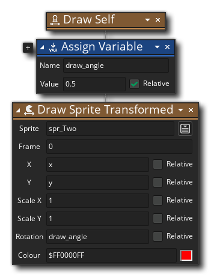
draw_self();
draw_angle = draw_angle + 0.5;
draw_sprite_ext(spr_Two, 0, x, y, 1, 1, draw_angle, c_red, 1);
This uses an additional function (draw_sprite_ext) or action (Draw Sprite Transformed) to draw the second sprite ("spr_Two") using the "draw_angle" value as the rotation, with a red blend colour.
Add a number of instances of the object into the room editor and then press the Play button at the top of the IDE. If all has gone correctly you should see something like this now:
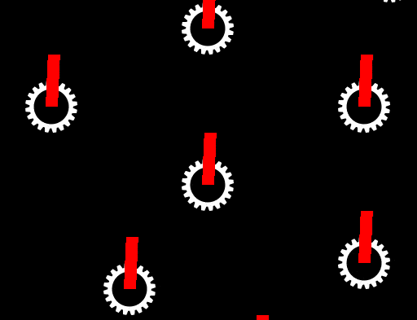
Before we leave this example, let's just tweak it a little bit and instead of having "spr_Two" simply rotate, we'll make it point towards the mouse position. For that we need to change the Draw Event GML Visual or GML Code to look like this:
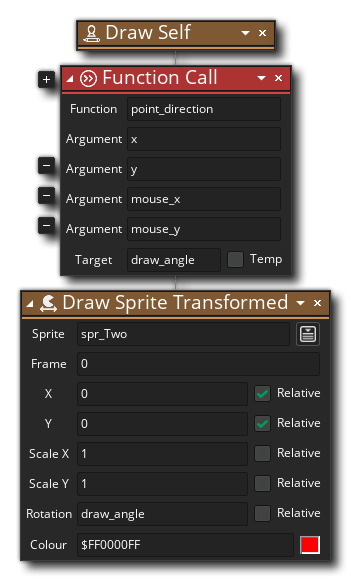
draw_self();
draw_angle = point_direction(x, y, mouse_x, mouse_y);
draw_sprite_ext(spr_Two, 0, x, y, 1, 1, draw_angle, c_red, 1);
Here we set the "draw_angle" variable to the direction from the instance's position (x, y) toward the mouse position (mouse_x, mouse_y).
Run the project again and this time you'll see something very different!
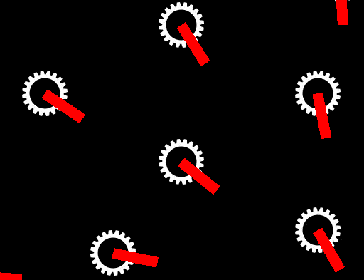
The sprite now points towards the mouse regardless of where you move it to! As you can see, layering sprites is a great way to add details to an object or to have something move independently of the "base" sprite assigned to the object, and it's a powerful tool that you'll probably use a lot in your own projects.
Now for the simplicity of this example, the calculation of the "draw_angle" value was included within the Draw event, however ideally you should have it in the Step event as Draw events should only contain statements required for drawing things, with per-frame calculations kept to the Step event.
Drawing Things Other Than Sprites
You can also draw things in the Draw Event that are not sprites, like text or shapes. In this example, we'll use the draw_self() function to draw the object sprite, but we'll also draw some other stuff, starting with some text. For this example, you'll need a sprite and an object (with the sprite assigned to it). In the object, first add a Create Event with this GML Visual or GML:
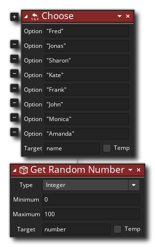
name = choose("Fred", "Jonas", "Sharon", "Kate", "Frank", "John", "Monica", "Amanda");
number = irandom(100);
All this does is tell GameMaker to choose one of the listed names randomly and assign it to a variable, as well as generate a random number from 0 to 100 for each instance of the object. We want to draw these values to the screen, and so for that you need to now add a Draw Event and in it add the following GML Visual or GML:
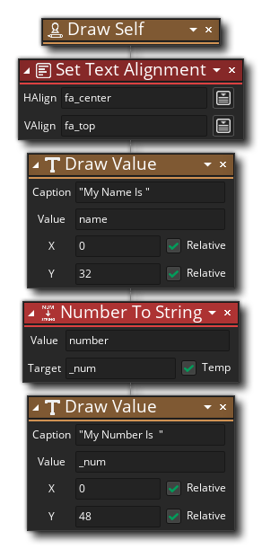
draw_self();
draw_set_halign(fa_center);
draw_text(x, y + 32, "My name is " + name);
draw_text(x, y + 48, "My number is " + string(number));
You'll notice in the above code that we use the string() function or Number To String action on the "number" variable that we want to draw. This is because all text has to be made up of characters, not actual number values, and so we need to use this function/action to convert the number value into those characters that we want to draw.
In this case we are taking the random number we generated and turning it into a "string" of characters that can be drawn. Also note that we set the text alignment. This simply tells GameMaker where to start drawing the text relative to the given position, and in this case we want the text to be centered along the x-axis.
Add a number of instances of the object into the room editor and then press the Play button at the top of the IDE. You should see something like this:
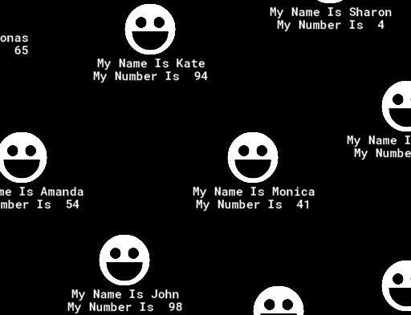
In all the examples so far we've been drawing the sprite assigned to the instance, but that doesn't always have to be the case. You can draw anything you want in the draw event, regardless of the sprite assigned. To illustrate this point, we'll change the code that we have currently by removing the draw_self() call and replace with a function to draw a coloured ellipse, like this:
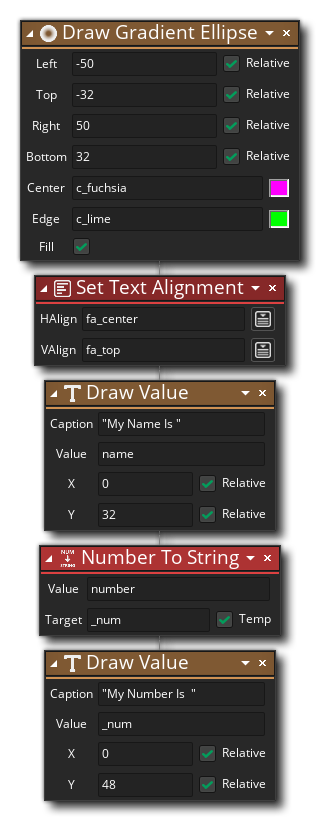
draw_ellipse_colour(x - 50, y - 32, x + 50, y + 32, c_fuchsia, c_lime, false);
draw_set_halign(fa_center);
draw_text(x, y + 32, "My name is " + name);
draw_text(x, y + 48, "My number is " + string(number));
Run the project again and you should see this:
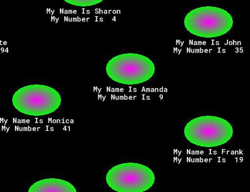
One important thing to note about this, is that even though we aren't drawing the assigned sprite, it will still be used for collision detection. So, while you may be drawing one thing, collisions will still be calculated based on the assigned sprite even if it's not visible. This is quite handy actually, as it means you can draw different sprites, but maintain a single collision mask based on the assigned sprite. Also note that you can still apply the different transforms like X/Y scale, and collisions will be based on the changed size, even though there is nothing being drawn to show this.
You can also do the opposite, where you change the sprite assigned to the instance, but keep one mask by applying a sprite to the mask_index variable.
We hope that after doing these examples you have a bit more confidence when using GameMaker and a bit more understanding of how it all works. The next section will explore how to get these things you've been drawing to move around the room as well as accept - and respond to - user input.